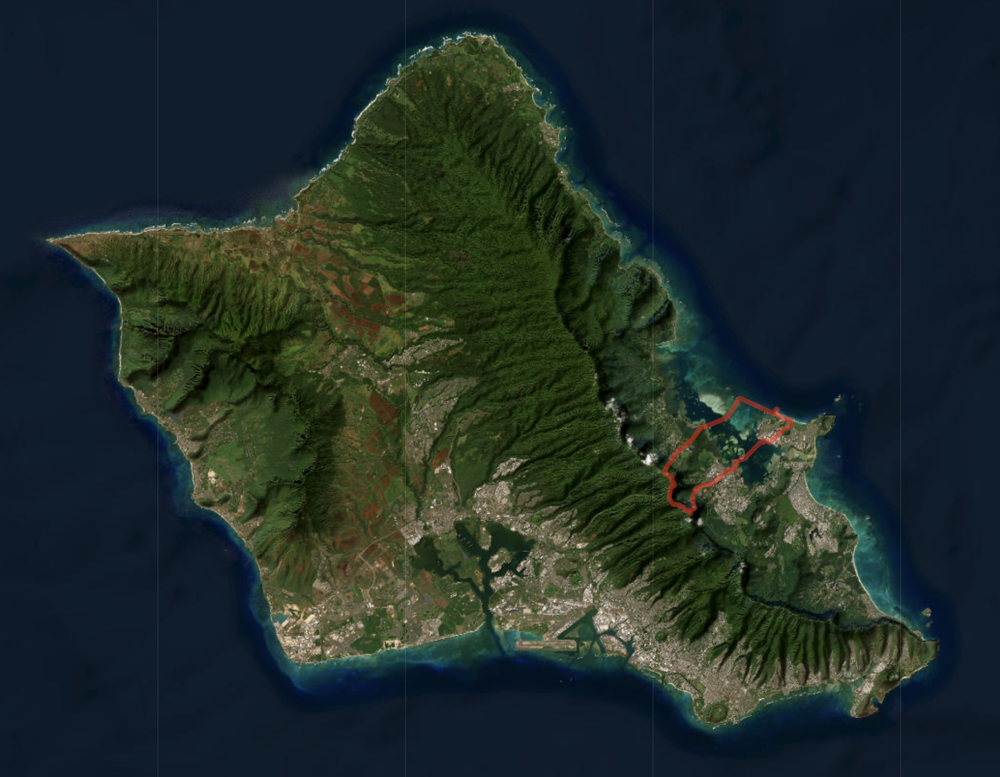
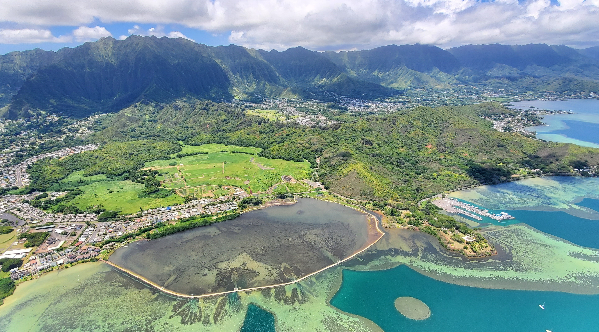
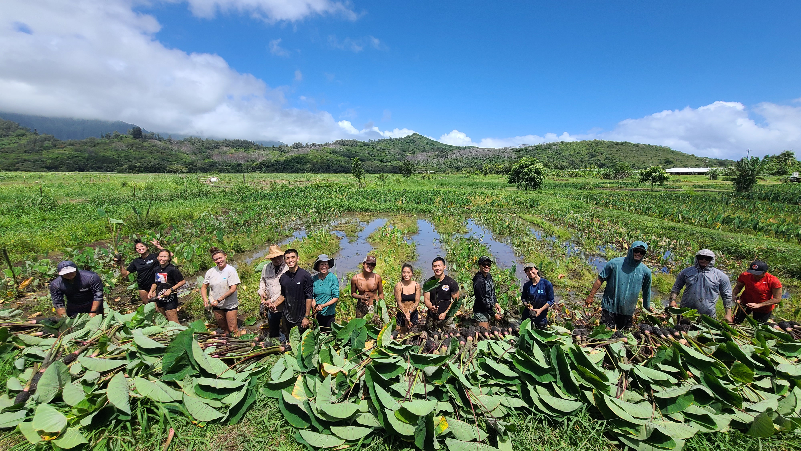
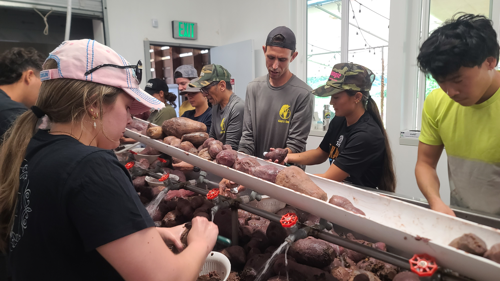
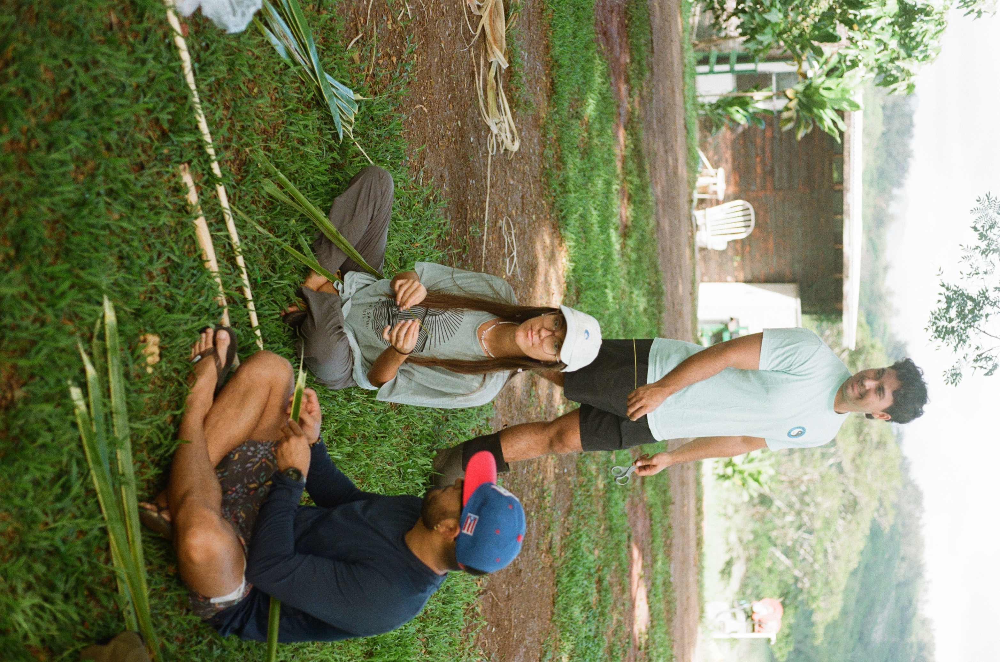
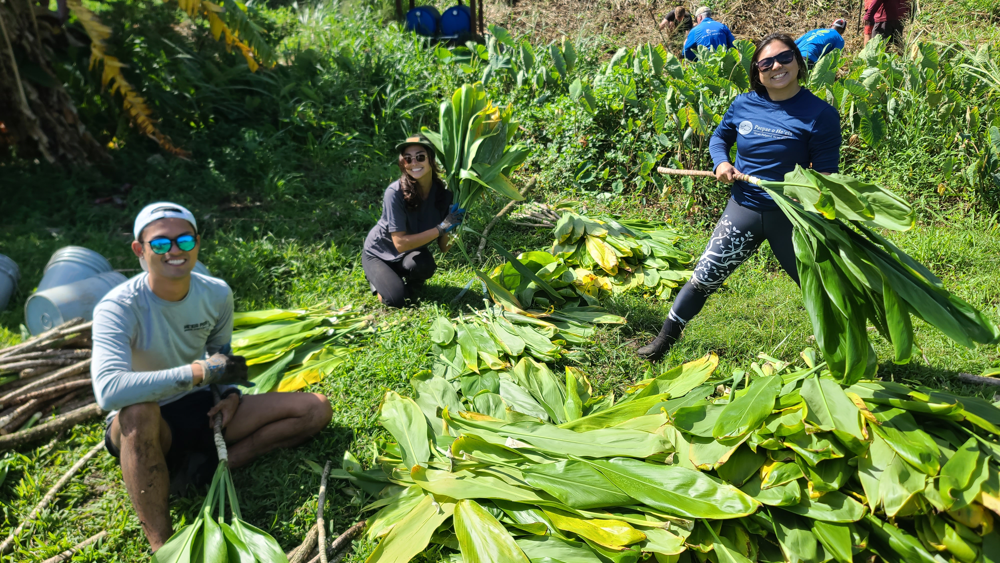
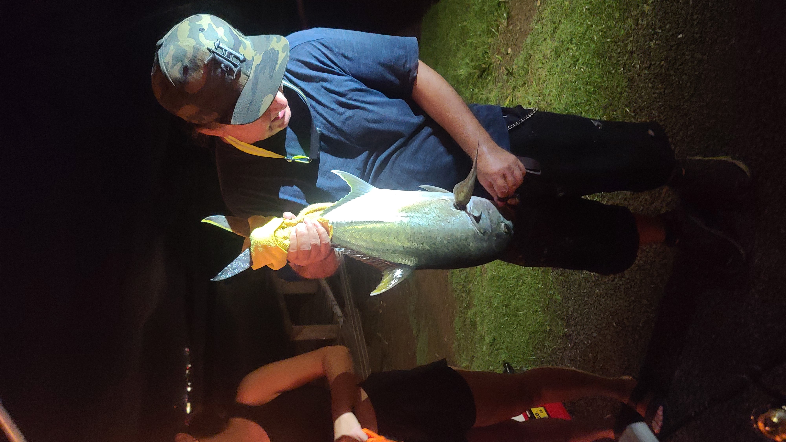
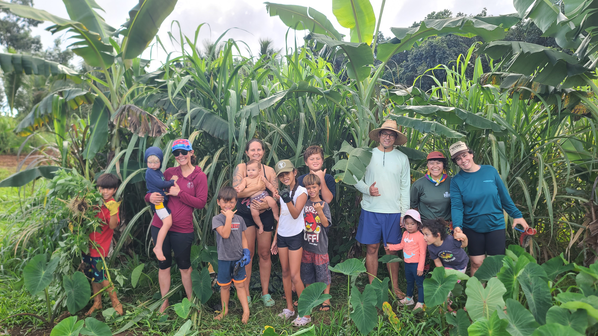

Aloha! You are being asked to participate in a research study conducted by (PhD Candidate) Louis Chua from the Natural Resources and Environmental Management Department at the University of Hawai‘i (Mānoa).
The primary aim of this survey is to study individuals’ perceptions and value of (He'eia ahupua'a) ecosystem services to Oʻahu residents, especially ecosystem services that have relational and cultural value.

Heʻeia ahupuaʻa (in red), located on the windward coast of Oʻahu, between Kahaluʻu and Kāneʻohe ahupuaʻa.
Eligibility Criteria
You must be aged 18 or above, and be a current or former resident of Hawaiʻi.
Time Commitment
This short survey will take approximately 2-5 minutes.
What are you being asked to do?
If you participate in this study, you will be asked to fill out a short survey. Taking part in this study is your choice and is completely voluntary.
You can choose to change your mind at any point during the survey.
If you choose to stop, there will be no penalty or loss to you.
Note that you can only take the survey once.
What will happen if you decide to take part in this study?
The survey will consist of two main Yes/ No questions, followed by six other questions about your demographic details
(none of which will be used to determine your identity).
What are the risks and benefits of taking part in this study?
There should be little to no risk to you for participating in this research project.
If you do become stressed or uncomfortable, you can choose at any point to stop taking the
survey and be withdrawn from the research.
Privacy and Confidentiality:
You will NOT be asked for any personal information, such as your name or address. Your response will be anonymous.
Please do not include such identifiable information in your survey responses.
Only the University of Hawai'i advisor (Dr Kirsten Oleson) and researcher (Louis Chua) will have access to the raw survey data.
Other agencies that have legal permission have the right to review research records.
The University of Hawai'i Human Studies Program has the right to review research records for this study.
You may contact the UH Human Studies Program at (808)956-5007 or uhirb@hawaii.edu to discuss problems, concerns and questions, obtain information, or offer input with an informed individual who is unaffiliated with the specific research protocol.
Please visit http://go.hawaii.edu/jRd for more information on your rights as a research participant.
Questions?
If you have any further questions regarding the research or survey, please contact Louis Chua at, LOUISCBC(AT)HAWAII.EDU
Please keep a copy of this informed consent for your records and reference.
By proceeding with the survey below, you will be consenting to participate in this study.
Mahalo!
Our ʻĀina

Heʻeia ahupuaʻa, showing loʻi kalo (flooded taro fields), native wetlands, and loko iʻa (fishpond), stewarded by Hawaiian community restoration organizations on Kamehameha Schools and State leased lands. PC: Philip Kapu
Heʻeia today is one of the most actively restored ahupuaʻa systems on Oʻahu. While much of Oʻahu has become highly developed, Heʻeia stands apart as being a hub for ʻāina restoration.
In Heʻeia, community decision making still lie amongst those who hold deep lineal and relational connections to the ahupuaʻa.
However, community fears and concerns about threats to the ahupuaʻa way of life are ever present.
Located on leased Kamehameha Schools and State lands, He'eia restoration lands today inspire, give life, and nourish in more ways than one.
It harbors and perpetuates generational moʻolelo (stories), including that of strong grassroots efforts to protect Heʻeia lands and water from development.
This ʻāina honors the care and love of generations past, and reflects the strong ethic of stewardship for the benefit of communities and future generations
that will inherit the bountiful ʻāina of Heʻeia.
What was once invasive groves of mangroves are now thriving loʻi and native wetland habitats.
The aim is to restore Heʻeia ahupuaʻa to a state of ʻāina momona (abundant land) again. PC: Louis Chua

Kalo (taro) harvest at the loʻi fields. PC: Kākoʻo ʻŌiwi

Community chips in to help clean kalo (taro) at the poi mill. PC: Kākoʻo ʻŌiwi

Learning to make torches using kukui tree nuts at the agroforest in Puʻulani. PC: Louis Chua

Harvesting tī leaves at the loko iʻa (fishpond). PC: Paepae O Heʻeia

Holoholo at the loko iʻa (fishpond). PC: Paepae O Heʻeia

Families and children learn from and experience being on ʻāina. PC: Kākoʻo ʻŌiwi
ʻĀina in Heʻeia affords space where residents can feel safe, nutured, heal, share food and laughter, teach their keiki (children) and connect with members in their community.
This is a 1928 airphoto within Heʻeia ahupuaʻa showing the extent of flooded cultivated fields. It is a key restoration objective of many community members
in Heʻeia. The orange boundary shows approximately 380 acres of 'āina being restored. Existing expansion are limited by factors such as financing, labor, development pressure, invasion
by non-native species, and lack of freshwater.
Take the Survey
Your honest input in this 2-5 min survey will greatly help us assess the needs, and plan for the future of Heʻeia ahupuaʻa.